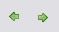

We can locate a toolbar in the window's top, right behind the main menu. Its options are:
Do/Undo: Do/Undo last action.
Find: Look for commands and elements of the chapter.

Back/Next: Go back/next to last selected element